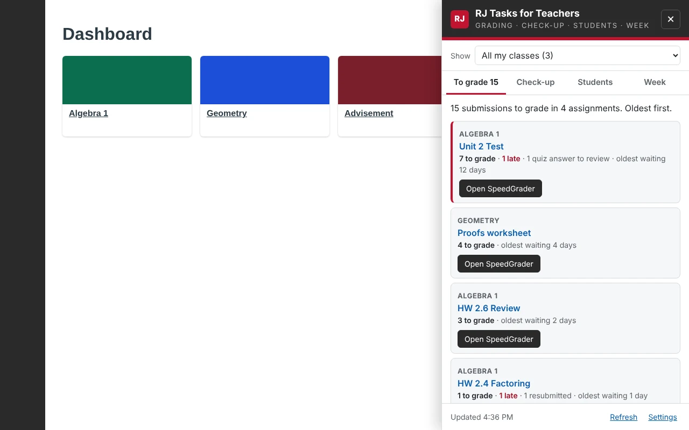
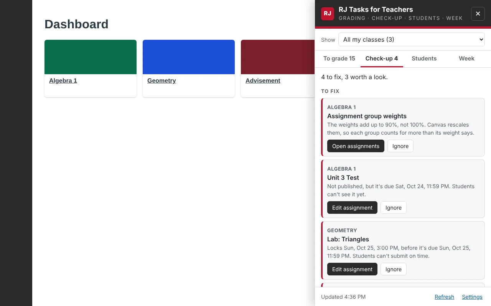
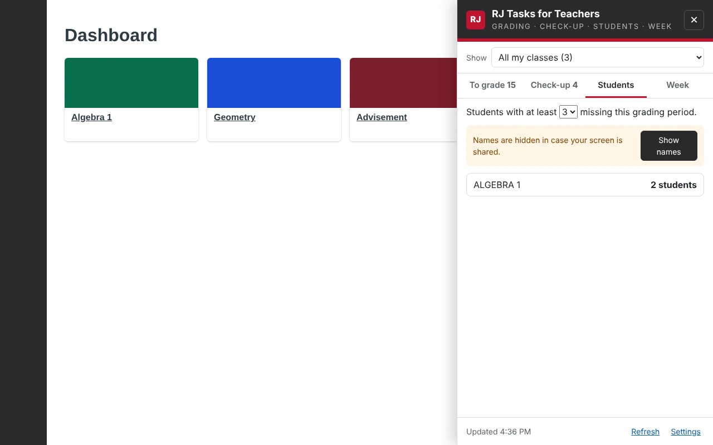
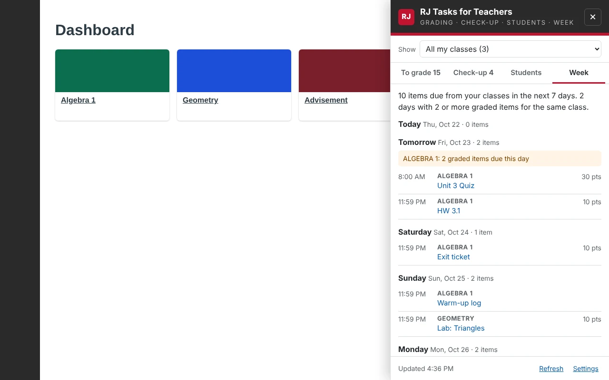
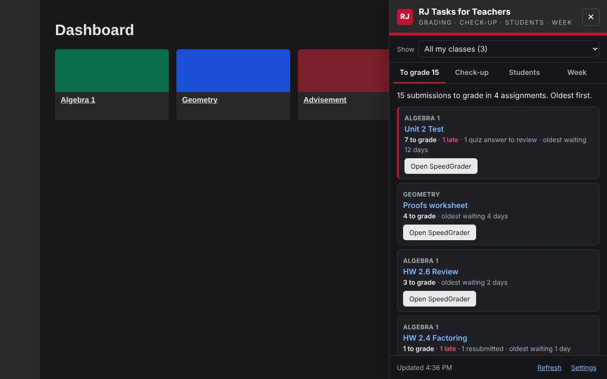
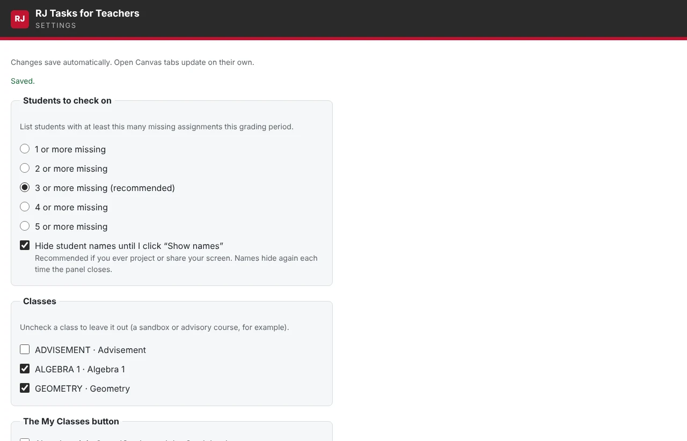
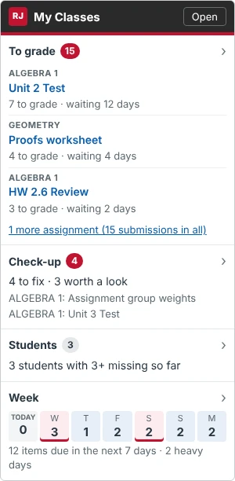

RJ Tasks for Teachers
Offered by Regis Jesuit High School Ed Tech






Screenshots use sample classes, assignments and made-up student names.
Overview
RJ Tasks for Teachers answers one question inside Canvas: what needs my attention across my classes? A My Classes card in Canvas's right sidebar shows it at a glance on your Dashboard, and for one class on that class's home page. Click any part for the full view. It covers this semester's classes only, and it only reads Canvas. It never changes anything there.
To grade
Every assignment with submissions waiting, across all your sections, oldest wait first. Late, resubmitted and quiz answers to review are marked. One click opens SpeedGrader.
Check-up
Checks your classes against the RJ Baseline (everything in Modules, missing policy on, a graded item every week, grading kept current) and catches setup slips before students do: missing or leftover due dates, unpublished work that's due, rubric and point mismatches, group weights, duplicate names and more. Turn off any check you don't need.
Students to check on
Students with three or more missing assignments this grading period (you pick the number), using Canvas's own Missing flag. Copy the list for an email or advisor note.
Your week
A two-week chart of the grading coming your way, so you can plan for it, plus what's due from your classes each of the next seven days. Days where one class has two or more graded items due are flagged.
Safe to project
Student names stay hidden until you click Show names, and hide again when you close the panel. The sidebar card only ever shows counts, never names. The button stays out of SpeedGrader and the Gradebook.
Read-only
It reads what you can already see in Canvas and changes nothing. Ignoring a check-up item only hides it on your computer.
Install
See the step-by-step walkthrough
RJ Tasks for Teachers is your choice. Nothing is added to your laptop unless you add it, and you can remove it any time. It takes about a minute, in Microsoft Edge.
-
Open the store page
The page won't come up in a store search, so use this link.
Open RJ Tasks for Teachers in the Edge store -
Click Get, then Add extension
Edge asks you to confirm. It only asks to work on RJ's Canvas site.
-
Open Canvas
Go to your Canvas Dashboard. The My Classes card is at the top of the right sidebar. If your Dashboard has no right sidebar, look for the My Classes button in the bottom-right corner.

Privacy
RJ Tasks for Teachers shows you information you can already see in Canvas, and nothing about your students leaves your computer. Read the full privacy policy.
Help
Report a bug or request a feature
Found something that isn't working, or want RJ Tasks for Teachers to do something new? Use the RJ Tasks for Teachers form. It takes about a minute, and you'll sign in with your RJ account. For a bug, add a screenshot if you can. Please don't include student names or grades.
Report a bug or request a featureI don't see My Classes in Canvas
My Classes only appears for people who teach or TA a class this semester (a class in the current 1st or 2nd Semester term). If you only teach PD or activity courses, turn off Only this semester's classes in Settings. If your window is narrow, Canvas hides its sidebar and the bottom-right button appears instead. Make sure you're on rjhs.instructure.com and reload the page. In SpeedGrader and the Gradebook it stays hidden unless you turn it on in Settings. In Edge, open edge://extensions and check that RJ Tasks for Teachers is listed and switched on.
A class I don't use (a sandbox, advisory) keeps showing up
Click the RJ Tasks for Teachers icon, then Settings, and uncheck that class under Classes.
Why doesn't My Classes match Canvas's To Do count?
My Classes counts this semester's classes only, and only active students (no Test Student or dropped students). Canvas's To Do counts every course you teach, including PD and activity courses.
Why doesn't Week show what students have in other classes?
Canvas only lets teachers see the courses they teach. Week covers your own classes. It flags any day where one class or section has three or more graded items due.
A check-up item is on purpose (a 0-point practice, say)
Click Ignore. It's hidden on your computer only, and nothing changes in Canvas. "Show them again" at the bottom of Check-up brings ignored items back.
How do I fix something Check-up found?
Each item links straight to the page where you fix it (the assignment, Modules, or the Gradebook). For how-tos and Canvas questions, start with the Regis Jesuit Professional Development course in Canvas; "Questions?" on the card and panel goes there too. A whole check you don't need can be turned off in Settings.
Edge asks me to turn off "developer mode extensions"
Edge shows this reminder for any extension installed by hand. Choose to keep it. When Ed Tech installs it for you, the reminder doesn't appear.
The panel shows an error
Click Refresh at the bottom of the panel, or reload Canvas. If it keeps happening, report a bug and add a screenshot of the message (hide student names first).